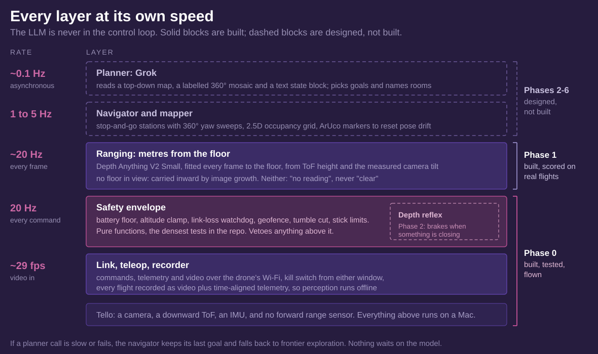
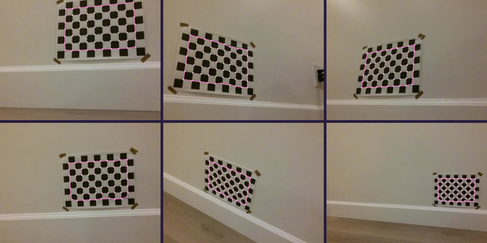
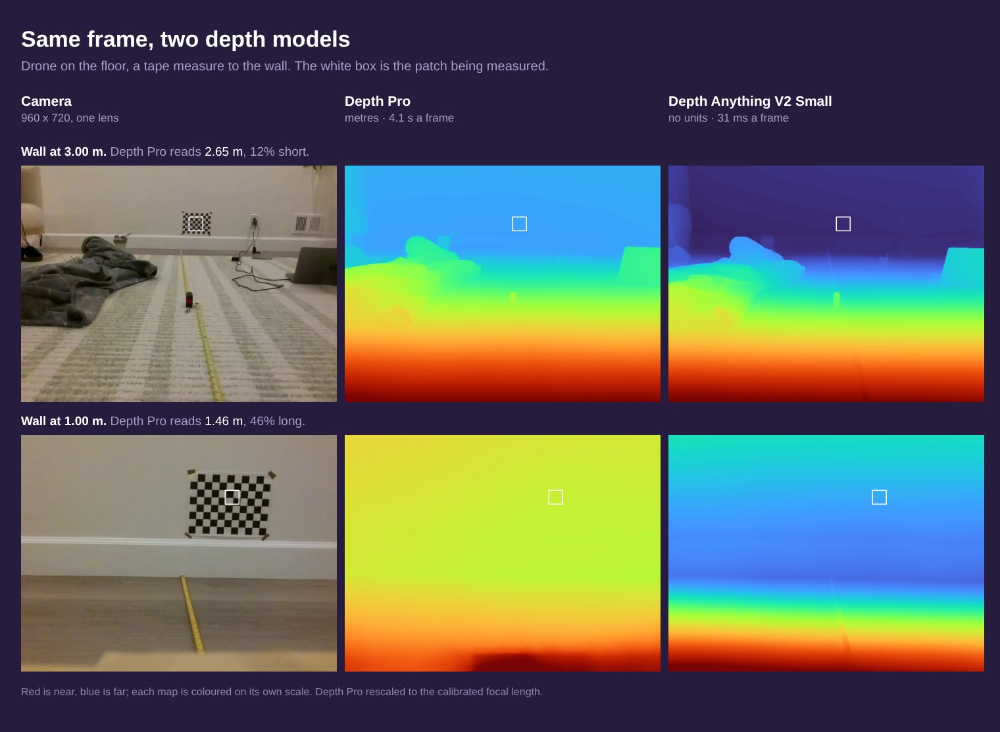
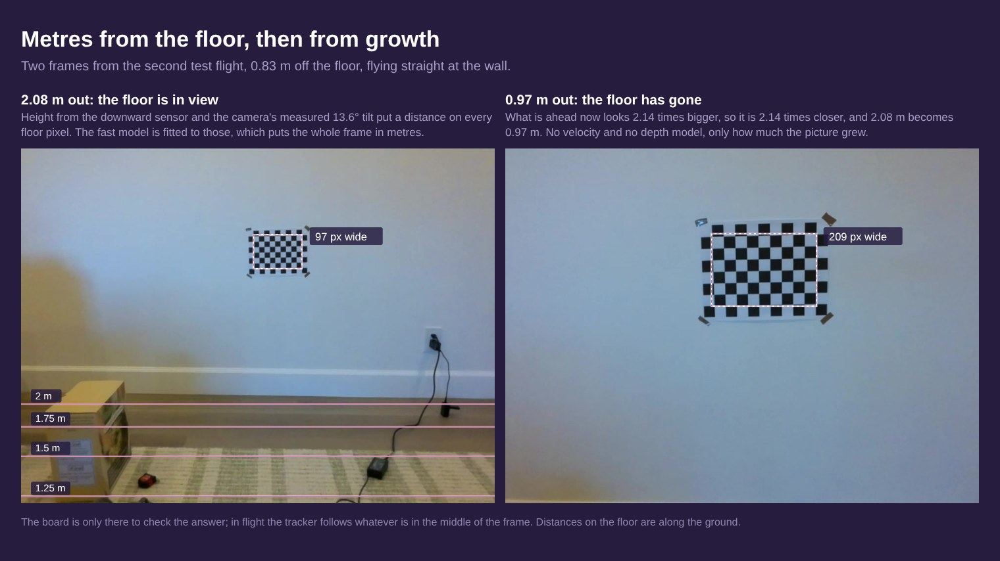
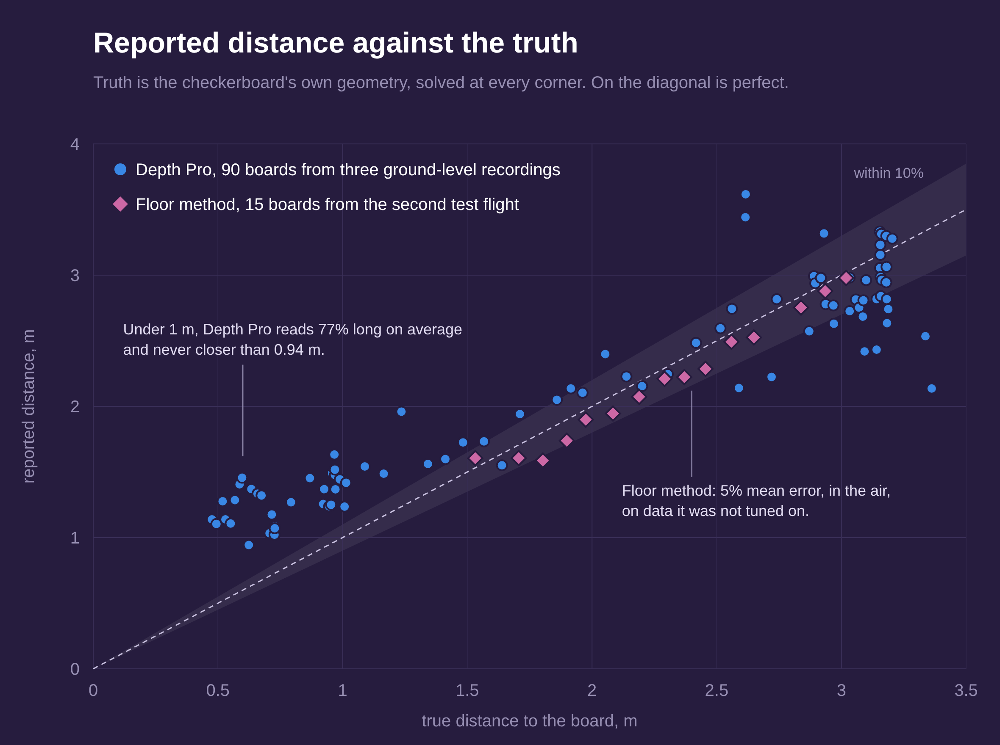

Tello Mapping Drone
A Ryze Tello that is meant to map an apartment on its own, with a language model choosing where to look next. The drone itself is a dumb radio airframe: one forward camera, a downward time-of-flight sensor, an IMU, and nothing that measures range ahead. Everything runs on a Mac.
Before it can map anything it has to know how far away things are, from a single camera. That is what this stage was about. The interesting part is that the depth model the design leaned on turned out to be wrong exactly where it matters, and the fix was geometry, not a better model.
Status, stated up front: the radio link, safety envelope, teleop and flight recorder are built and flown. The camera is calibrated, and ranging is built and scored against ground truth on two real flights, but has not yet run live with the drone in the air. Navigation, mapping and the planner are designed, not built.

The language model never flies the drone. It runs about once every ten seconds and only picks goals and names rooms. A navigator executes those goals, and a safety layer underneath can veto anything either of them asks for. If a model call is slow or fails, nothing waits on it.
How it will map
Stop and go, never continuously: fly to a station, hover, sweep 360° in yaw, capture, move on. Hovering makes slow perception free, yaw is the Tello's most repeatable motion, and a full sweep almost always catches one of the ArUco markers taped to the door frames, which resets pose drift at every station without any loop closure. Each station's depth goes into a 2.5D occupancy grid, and a frontier explorer picks the next station.
Every one of those steps needs metres from one camera. A depth model that outputs "1.4" with no units could mean a metre or a room, and you cannot set a safety margin, size a doorway or build a map in those numbers. Getting real metres is the rest of this page.
Calibrating the camera
Everything downstream needs the camera's real intrinsics, and the spec sheet's 82.6° diagonal field of view is wrong. A printed 25 mm checkerboard, 74 views, solved to 0.93 px RMS: a focal length of 905 px, which is 56° horizontal and 67° diagonal. The focal length moved 0.3% between 60 and 74 views, so more views would not change it.

One trap on the way: the corner detector happily finds smaller grids inside a big board. A search for a smaller pattern still matched 26 of 31 frames on the real board, so the tool now detects the largest size present instead of trusting the first match.
The board as ground truth
The same checkerboard then became the ruler for everything else. Solving its pose in a frame gives the true distance at every one of its corners, so any recording with the board in view scores itself, with no tape measure. Checked against a tape, the board put the wall at 2.98 and 2.06 m where the tape said 3 and 2. The 1 m mark came out 15 cm off and is still unexplained.
Where the camera actually points
The method below needs the camera's angle to the floor, and the IMU reports the body's, not the camera's. On a stand with the motors off, the IMU's pitch turned out to run opposite to the camera's, with the camera sitting about 12° below the IMU's zero. In flight it changed: the camera's pitch holds still while the body tilts, by the look of it image stabilisation that only runs with the motors on. Modelling camera pitch as a fixed angle gave 2.6% error on the first flight, against 7.9% for following the IMU. The angle fitted there was 13.5°; measured independently on the second flight, from boards close enough to trust their orientation, it was 13.6°.
The ruler that was not
The design called for two depth models with two jobs. Depth Anything V2 Small is fast, 31 ms a frame on the Mac, but has no units. Apple's Depth Pro outputs metres but takes 4.1 s a frame. The plan was for Depth Pro to measure a frame in metres every few seconds, and a two-number fit to convert the fast model's frames in between.

That only works if Depth Pro's metres are right, and under 2 m they are not. Scored against the board at 90 positions, it compresses the range: near reads far and far reads near. Under 1 m it read 77% long on average, and it never reported anything closer than 0.94 m. That is the dangerous direction for a drone, an obstacle at half a metre reported as a metre away. It is not a scale error one factor could fix; the scatter changes frame to frame. The fusion itself was faithful, tracking Depth Pro within a few percent. It just carried a wrong number.
Depth Pro's metric scale rests entirely on its own guess of the focal length, which ranged from 940 to 1229 px against the calibrated 905. Exposing that estimate and rescaling to the calibrated value helped, from 118% long under 1 m to 77%, but did not fix it. Neither did flying height: at flight height it still failed the 10% bar at 1 to 3 m. A third model, Depth Anything's metric indoor variant, which I converted to CoreML myself, failed the same way and worse. Two independently trained models failing alike points at the scene: a close, plain wall gives a single camera almost no cue to scale.
Metres from the floor
The floor is a ruler that is always there. With the camera's height from the downward sensor, its tilt from the measurement above, and the calibrated intrinsics, every floor pixel has a known distance by pure geometry. Fitting the fast model to those pixels, every frame, puts the whole frame in metres, and since nothing is carried from frame to frame, the fast model's habit of rescaling itself stops mattering.

Where the floor is visible, it is accurate. On the second flight, which none of the camera constants were tuned on, steady-flight readings at 1.5 to 3 m came out about 5% off on average, the worst at 12%. On average they read about 4% short, most likely the gap between the sensor window and the lens, which is still a 2 cm guess.

The limit is geometric. At 0.83 m up, the nearest floor the camera can see is about 1.2 m ahead, so close to a wall there is no floor in the frame at all, which is exactly where the distance matters most.
Carrying it inward
Three ways of carrying a distance closer were tested, and two failed. Carrying the floor's scale onto later frames failed, because the fast model's own scale drifts as a wall fills the view: its readings stuck near 2 m whatever the truth. Distance from the drone's own motion failed too. The velocity telemetry turned out to be in decimetres per second, not centimetres (the HUD's speed had been reading ten times low), and in whole units with a lag, which left 17% mean error in the distance travelled alone.
What worked is the simplest idea. Whatever is straight ahead looks bigger as you approach it, and the distance shrinks by the same factor, so the last floor reading divided by how much the middle of the image has grown gives the distance now. Started from the floor method's own estimate, that held about 3.5% mean error down to 0.5 m, on both flights. Played through the live code in real time against the second flight, it produced 21 readings a second, a median 51 ms behind the frame, with a mean error of 3.7% and a 90th percentile of 6.7%.
"No reading" is not "clear"
Coverage is the weak spot. Under 0.5 m the tracked region overflows the frame, and a blank wall gives the tracker nothing to follow. Between 0.5 and 1.5 m it read 81 of 138 frames. Restarting a lost track from its own last reading raised that to 102, and pushed the 90th-percentile error from 2.7% to 32%, so it was reverted. A wrong number is worse than none. The ranging says "no reading" with a reason, and whatever consumes it must treat that as unknown, never as clear.
What comes next
Every test so far had a checkerboard in view, which is ideal texture for the tracker. Next is the same approach flown at a wall with ordinary features, then at a plain painted wall, where the right answer is "lost the track", not a number. Then measuring the sensor-to-lens offset behind the 4% bias. Then the depth reflex: brake on whatever is near and closing, with margins sized from these measured error bands.
After that comes the map itself: marker-anchored pose, stop-and-go stations, a top-down grid, and a frontier explorer with no language model at all. That explorer is what will actually map the apartment. The planner adds room names, recovery and visible reasoning on top of something that already flies itself, not instead of it.